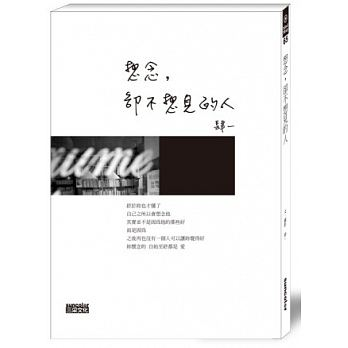
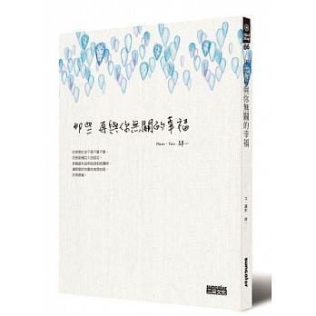
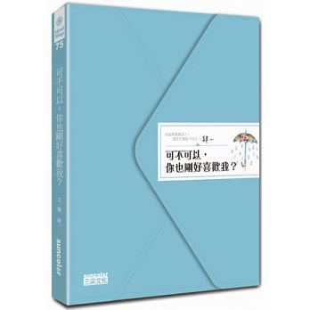
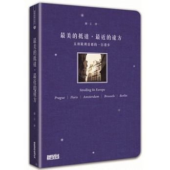
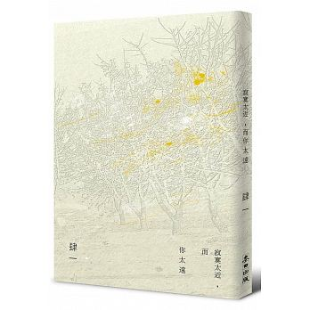
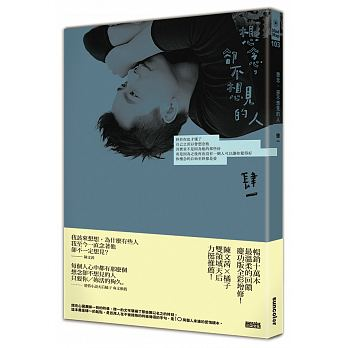
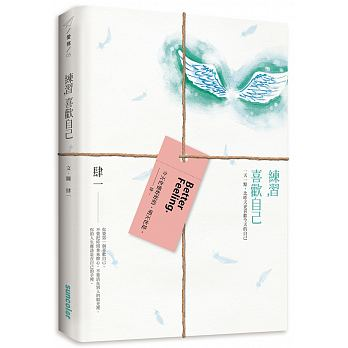
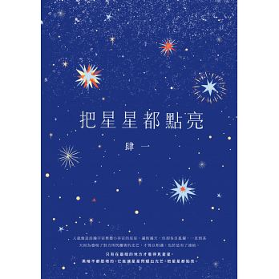
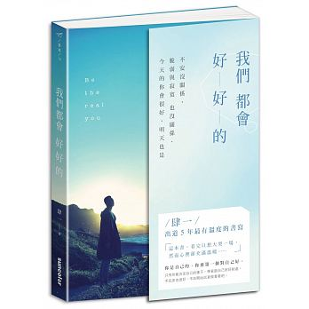
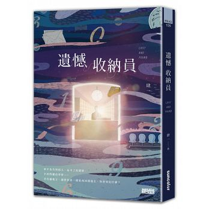

作者簡介：
肆一，男。
「姊妹淘」駐站作家、「法蝶生活館 La Fatt'e」專欄作家、
ETtoday名家、BRAND 名牌誌名家、「智邦」專欄作家。
不覺得愛情是生命的唯一，但認為，有愛，生活會更有滋味。
覺得世界是深深淺淺的灰，拒絕追求絕對的黑跟白。
不是戀愛高手，但身旁都是戀愛動物， 相信透過書寫，愛情跟自己都可以更清楚。
喜歡電影、音樂與旅行，
覺得電影不是真實人生，但有人生縮影；
覺得音樂沒有喜怒哀樂，但有人生感受；
覺得旅行不只是到遠方，而是看到自己的心。
戀愛也是一樣，在愛情裡面我們看到的都是自己的投射。
作品一覽：(依出版日期排序)
2012/12/21 想念，卻不想見的人
愛情的世界只有幸福和不幸福，愛與不被愛，
這是一段直白赤裸的愛情宣言。
肆一透過男人對失戀最誠實的告白，點出女人對愛情的盲點，
讓人不禁體悟到愛情的殘酷和現實，
但是透過肆一溫暖、細膩的筆觸和充滿正面力量的文詞，
我們還是能感受到愛情的美好，
並且勇敢地追尋愛情。

2013/05/31 那些再與你無關的幸福
你羨慕的並不是不離不棄，
而是那種巨大的認定。
那種當利益與自身相牴觸時，
還願意把你擺在前頭的愛。
你羨慕著。
這本書，寫給那個即使傷痕累累仍不放棄愛、
那個在崩塌的感情中仍願意重建信仰的你……

2013/12/27 可不可以，你也剛好喜歡我
累了，就歇一下；倦了，就躺一會兒，不心急、不勉強，
好好守護在心裡面那些關於愛的最初衷。
只要不忘記，有天就會派上用場。
然而在有些時候，就連要祝福自己都很困難。祝福，也需要花費力氣。
所以，這本書是一份「祝福」。
當你感到自己無處可去、當你覺得自己是一個人、當你感覺快要不愛自己、
或是當你發現自己快要哭的時候……
希望可以讓你知道，有人懂你、在默默為你打氣，給予擁抱。

2014/06/27 最美的抵達，最近的遠方：五座歐洲首都的一日漫步
這本書是肆一這些年在歐洲旅行的心得重新整理，
再加上相片與插畫，充分呈現肆一對於這塊土地的想像。
這本書不是旅行的教戰守則，而是一種指引，當有朝踏上自己的旅程時，
希望能試著用自己的方式創造出屬於自己的城市記憶。旅行沒有一定要怎樣不可，
只要是讓自己感到舒適了，就是好的旅行。愛情也一樣。

2015/03/28 寂寞太近，而你太遠
以「寂寞」為題，40篇療癒散文集結，陪你渡過那些隱晦幽暗的日子。
偶爾，還是會有受不了而哭泣的時候，但再不會感覺到寂寞。
在肆一的文字裡，所有的寂寞終於放逐。

2015/08/28 想念，卻不想見的人【十萬慶功全彩圖文增修版】

2016/01/29 練習，喜歡自己：一天一點，比昨天更喜歡今天的自己
跟著書中的短文，每一天，選一篇，靜心閱讀，發現生活種種美好的事物，
在無助與否定自己的時候，仍能相信、珍視自己的美麗。

2016/12/03 把星星都點亮
「因為人是不完美的生物，會讓好的事發生、但也會犯錯；
用自己的方式去愛人、也會傷害自己所愛的人……
可是，即使是這樣，並不表示我們不值得被愛、無法被原諒。
這一本小說，想寫給每個不完美的我們，給希望被擁抱的每一個人。」—肆一

2017/06/30 我們都會好好的：不安沒關係，脆弱和寂寞也沒關係，今天的你會很好，明天也是
你是自己的，你要第一個對自己好。
只有你能決定自己的樣子，學著跟自己好好相處，
不完美也很好，不妨開始試著做看看吧。
「這本書看完只想大哭一場，但心裡卻充滿溫暖......」
肆一出道5年最有溫度的書寫。
不是你不好，只是對自己不夠好，
試著接受那個不夠完美的自己吧！

2018/06/01 遺憾收納員
你有什麼遺憾呢？
把它們帶來這裡吧，這裡會打包你的遺憾，傳遞到過去歸還給原主，直到你好起來再歸還。
當你準備好了，就來到遺憾招領中心吧！
傷痛是人生的一部分，不需要強迫自己不再傷心，
然而，我們卻可以好好與它和平共處。

外部連結：


販售通路：